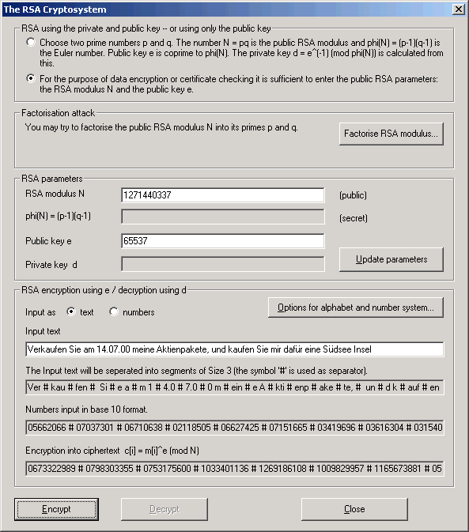

In contrast to symmetric encryption methods, the RSA public key is available to everybody for encryption and signature verification.
To perform one of the public key operations, select the lower option in the upper radio button group: RSA using only the public key.

After you enter the public RSA key consisting of the RSA modulus N and the public exponent e, you can perform the following three operations:
The most well known attack on RSA is to compute the factorization of the RSA modulus N (which is part of the public RSA key). You can start this factorization attack directly from this dialog. In case of successful factorization all secret parameters of the attacked RSA key will be filled into the dialog (this attack is only successful in case of an RSA key with a "small" bit length: smaller than 250 bit).
This gives you the opportunity to experiment and determine, which key lengths are definitely too short for real-life usage.
In case of successful factorization the first option in the upper radio button group (RSA using the private and public key) will be enabled, because now the private parameters are known. This enables you to decrypt messages and to sign a message in the name of the key owner.